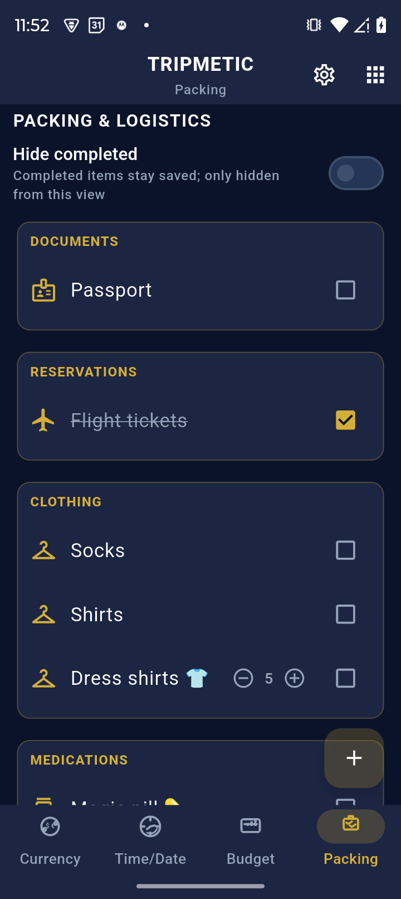
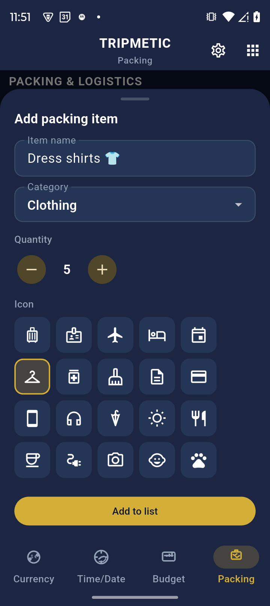
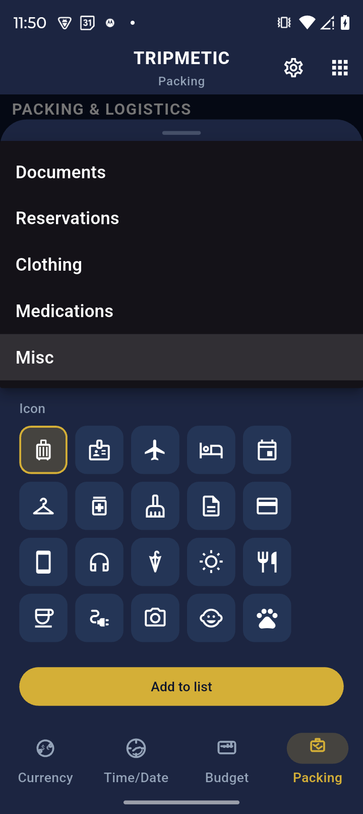

The most stressful part of international travel isn't the flight—it's the nagging feeling that you left your passport or laptop charger on the kitchen counter. The Tripmetic Zen Packing List was built to eliminate that anxiety entirely.
Instead of a chaotic, endless checklist in your phone's default notes app, Tripmetic forces logical categorization and visual decluttering. Here is how to master your packing strategy.
1 Navigate to the Packing Hub
Open the Tripmetic app and tap the Packing tab from the bottom navigation menu (or find it inside the More Tools menu depending on your layout). You will immediately see a clean list of intuitive categories, such as Documents, Electronics, Clothing, and Toiletries.

2 Add Items and Quantities
Tap into any category to start adding items. When you add a new entry, Tripmetic allows you to specify the exact quantity. For example, instead of just typing "Shirts," you can log "5x Dress Shirts". This ensures you have the exact inventory you planned for without overpacking.

3 Activate Zen Mode
This is where the magic happens. A checklist of 50 items is overwhelming to look at. As you physically place an item into your suitcase, check the box next to it in the app.
Then, locate the toggle switch at the top of the screen labeled "Hide Completed". When activated, every item you check off will visually disappear from the list. This "Zen Mode" leaves you with a beautifully minimal view of only the items you are missing, eliminating visual fatigue.

4 Save Reusable Templates
If you take the same type of business trips or weekend getaways frequently, you don't need to reinvent the wheel. Once your list is perfected, use the options menu to save your current setup as a reusable template. On your next trip, simply load the template and start packing immediately.
Frequently Asked Questions
Yes. Just like your budget and itinerary data, your packing lists are saved securely to your device's local storage. You can edit lists and check off items while entirely offline or in Airplane Mode.
Tripmetic operates on a privacy-first, local-storage architecture. Your data lives on the device you type it into, meaning it will not automatically sync to other devices via the cloud.
No. To keep the interface clean and professional, Tripmetic provides hardcoded, universally applicable categories. We recommend fitting niche items into the closest matching logical group.